HDMI-DDC Input Switch
A one-press monitor input switch. Build guide, setup and firmware updates, all on this page. Source, print files and issues: GitHub.
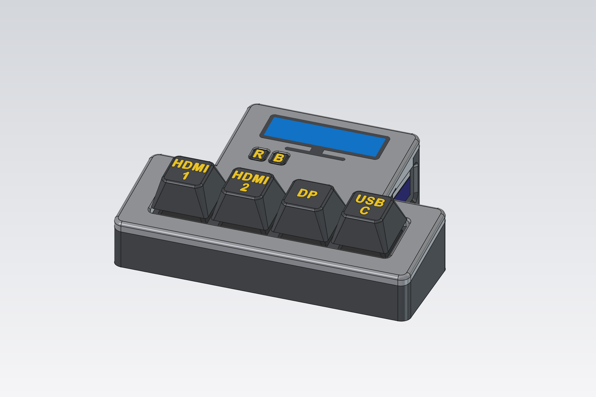
A small desk box that switches your monitor's input with one key press. It plugs into a spare HDMI port on the monitor and sends the same "change input" command the monitor's own menu does (DDC/CI), so it works with whatever is connected to the other inputs: a PC on DisplayPort, a laptop on USB-C, a console on HDMI.
- No software on your computers, no network, nothing to pair. Plug it in and press a key.
- Pressing the key for its own HDMI port shows an info screen with the current setup.
- What each key does is set up from this page and stored on the switch.
Contents: Parts · Printing · Wiring · Assembly · Monitor setup · Using it · Adding a monitor · Troubleshooting
Parts
| Part | Qty | Notes |
|---|---|---|
| Adafruit Feather RP2040 with DVI Output Port (product 5710) | 1 | The brains, and the HDMI connection to the monitor |
| MX-style key switches | 4 | Built with Kailh Tactile Brown, 10 pack (Adafruit 4954). Any MX-compatible switch fits. |
| HDMI cable | 1 | A short, flexible one; stiff cables drag a light box around |
| USB-C cable | 1 | Power, and setup from a computer |
| Heat-set insert M2.5 × 4 mm × 3.5 mm OD | 4 | Board standoffs |
| Screw M2.5 × 6 mm | 4 | Board to tray |
| Heat-set insert M3 × 4 mm × 5 mm OD | 4 | Lid: 2 front, 2 back |
| Screw M3 × 6 mm, button head | 4 | 2 up through the floor, 2 through the back wall |
| Adhesive rubber feet | 4 | Any size; keep them off the two front screw holes |
| Hook-up wire, superglue | Wire for the keys; glue for the switch plate |
Printing
Everything is PLA at 0.2 mm layers with no supports. The 3MF files with more than one part are multi-colour: load them as one object with multiple parts and pick a filament per part.
| File | Orientation | Colours used here | Notes |
|---|---|---|---|
keycaps.3mf | face down (as exported) | Keycaps black, Legends yellow | |
case-buttons.3mf | top down (as exported) | Buttons black, Letters yellow | Use a brim: small footprint |
case-plate.stl | glue side down (as exported) | black (hidden) | Holds the switches |
case-lid.3mf | top face down (as exported) | Lid gray, frame black, screen blue | |
case-tray.stl | upright (as exported) | black | One-layer caps over the screw holes: push the screw through |
Printing an MX plate test first? switch-coupon has cut-outs from 13.9 to 14.2 mm, and stem-fit-test has keycap stems from 1.20 to 1.40 mm. The case uses 14.0 and 1.30.
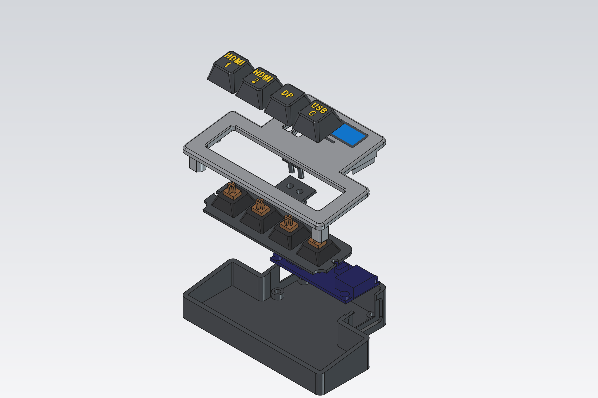
Wiring
Each key switch has two pins. Wire one pin of each key to its own Feather pin, and all the other pins together to GND. No resistors: the Feather's internal pull-ups are used.
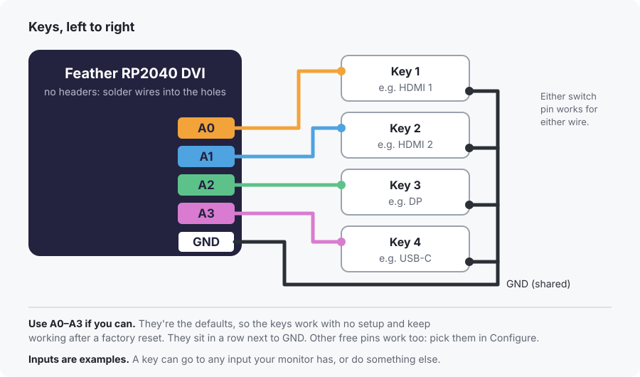
On the switches, the pins are short, so give each pin one wire. Run a single ground wire along the same pin of every switch: solder its end to key 4, then at keys 3, 2 and 1 cut the insulation and slide it apart to open a 3 mm bare window, and solder that. Upside down, key 1 is on the right.
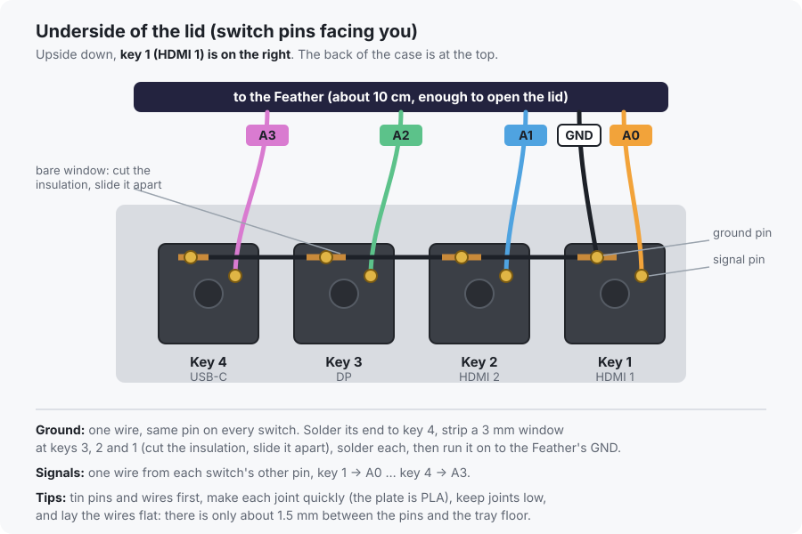
Don't fit pin headers. The board sits low in the case, so solder the wires straight into the A0–A3 and GND holes from the top and keep the joints low.
A0–A3 are just the defaults. Everything is configurable: each key can go to any input your monitor has, show the info screen, or do nothing, and any free pin can be used. The inputs here are the author's setup (two HDMI, DP, USB-C). Set your own in Configure, and print keycaps with your own legends (LEGENDS in case/keycaps.py).
| Key (left to right) | Feather pin | Default input |
|---|---|---|
| 1 | A0 | HDMI 1 |
| 2 | A1 | HDMI 2 |
| 3 | A2 | DP |
| 4 | A3 | USB-C |
Then the Feather's HDMI goes to a spare HDMI port on the monitor (HDMI 2 here), and USB-C to power. Any USB charger works once it's set up.
Leave the Feather's STEMMA QT connector empty. It shares the I²C bus with the monitor's DDC lines.
Assembly
- Melt the 4 × M2.5 heat-set inserts into the tray's standoffs.
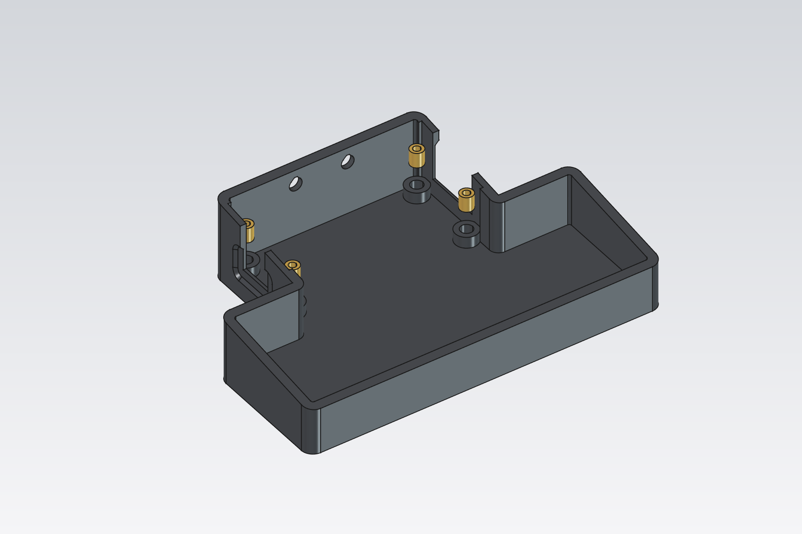
- Melt the M3 inserts into the lid: 2 into the front posts, 2 into the back posts. Do the back ones with the lid lying on its back, so you press straight down.
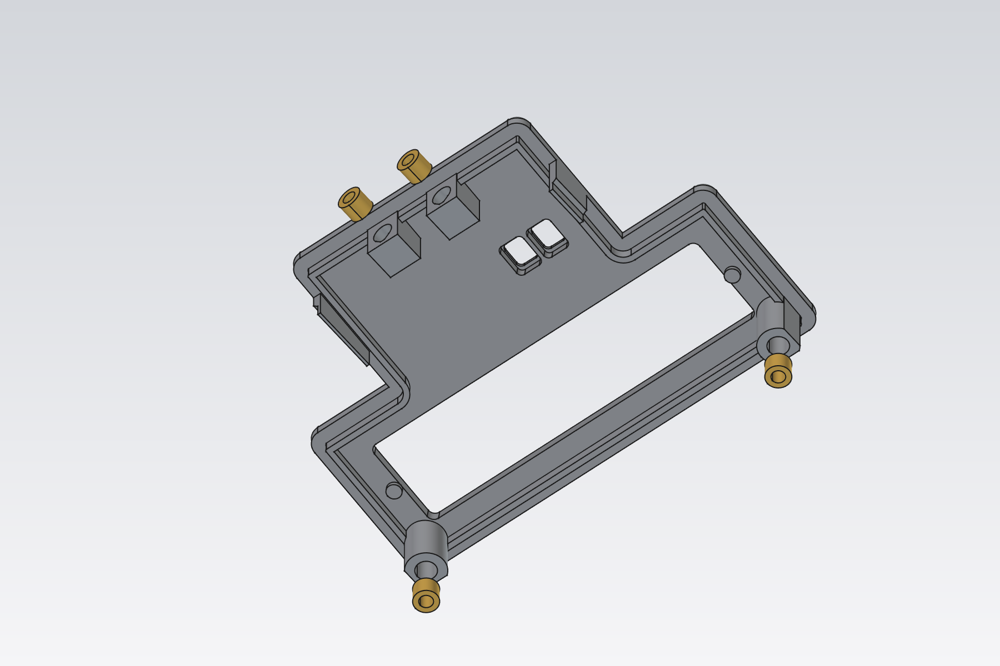
- Screw the Feather to the tray with the 4 × M2.5 × 6 screws, then wire the keys (see Wiring).
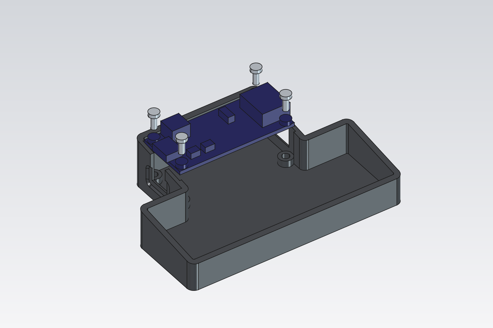
- Clip the four switches into the switch plate. Drop the R and B buttons into their holes from under the lid, then glue the plate in place: its two pins line it up, and its tab traps the buttons.
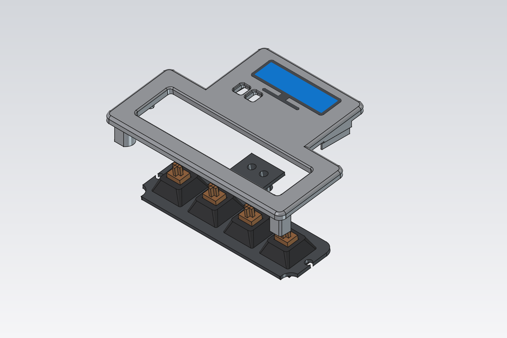
- Lower the lid onto the tray. Fit 2 × M3 screws up through the floor at the front and 2 through the back wall. Press on the keycaps and stick on the feet.
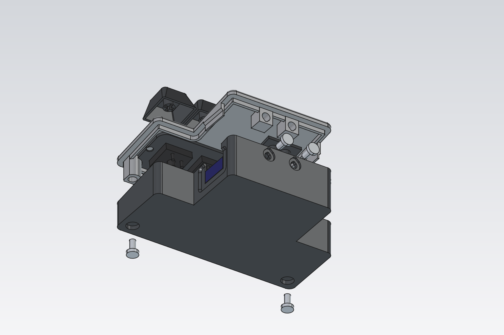
The underside of the lid, for reference:
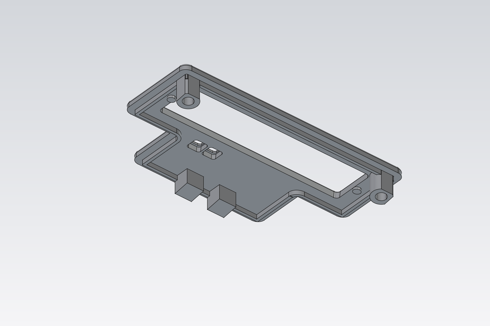
Monitor setup
- Make sure DDC/CI is on in the monitor's menu, if it has that setting.
- The switch's HDMI port stays dark except while you're looking at its info screen, so the monitor won't jump to it when a computer sleeps, and can still go to standby. If yours does jump there anyway, turn off Auto Input Switch (LG) or anything like it.
- LG UltraGear monitors ignore the standard input command. The LG UltraGear preset uses LG's own command, tested on the 45GR75DC-B.
Using it
- Keys switch the monitor to their input. The key for the switch's own port (HDMI 2 here) shows the info screen; it goes dark again when you switch away, or after 5 minutes.
- R restarts the switch. B is a spare key (the Feather's BOOT button) you can give a job in Configure.
- Factory reset without a computer: hold keys 1 and 2 while plugging in USB.
- Configure (tab above, Chrome or Edge): connect, then pick a preset or enter your monitor's values, use Try to test inputs, and choose what each key does. Marking This computer makes Try switch back after 10 seconds.
- Install firmware (tab above) updates the switch. Your settings are kept.
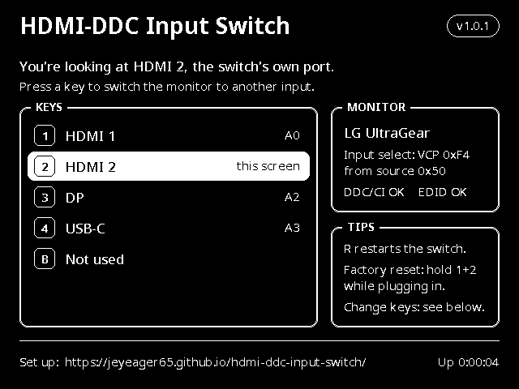
Adding a monitor
Most monitors use the standard input command (VCP 0x60 from source 0x51), but the value for each input varies by brand. To find yours:
- In Configure, pick MCCS standard, mark This computer, then press Try on each input and watch what the monitor does.
- Change values until each input switches correctly. Common ones:
0x0FDP 1,0x10DP 2,0x11HDMI 1,0x12HDMI 2, and often0x1BUSB-C. - If nothing reacts, your monitor may use a proprietary command, like LG's VCP
0xF4from0x50. - Save it to the switch, and share it: add an entry to
web/presets.jsonin the project and open a pull request.
Troubleshooting
| Symptom | Try |
|---|---|
| Scan doesn't find DDC/CI (0x37) | Check the HDMI cable and port, and that DDC/CI is on in the monitor's menu. Some monitors stop answering in deep standby: wake them first. |
| "ACK" but the input doesn't change | The monitor heard the command but uses different values: see Adding a monitor. |
| The info screen says "no signal" | Press the switch's own key: the picture only turns on then, for 5 minutes. Also check that the Feather's HDMI is in the port marked as The switch, and that the board has USB power. |
| A key does nothing | Check its wiring to the right pin and to GND, and that the key has an action in Configure. |
| Install mode doesn't show RPI-RP2 | Hold BOOT (the B button, or the board's button), tap RESET (R), release BOOT. |
| Connect lists nothing | Use Chrome or Edge on a computer, and close any other program using the switch's serial port. |
Monitor
Inputs
Each input's value is what the monitor expects for "switch to this input". Try sends it now, using the VCP code and source above, so you can find values for a new monitor before saving. If you mark the input this computer uses, Try switches back to it after 10 seconds (remembered in this browser). Mark the input the switch is plugged into: its info screen shows there.
| # | Name | Value | This computer | The switch |
|---|
Keys
Left to right as on the case. A key can switch to an input, send any VCP command (for example brightness, VCP 0x10), or do nothing. BOOT is the small button on the Feather.
| # | Pin | Action | Does |
|---|
Tools
Activity
Install or update firmware
- Put the switch in install mode.
Pick the switch's port when asked. A drive calledRPI-RP2appears. If nothing happens (new board, or no firmware yet): hold BOOT, tap RESET, release BOOT. - Copy the firmware onto that drive.
In the save dialog, choose theRPI-RP2drive and keep the name. The switch restarts by itself when the copy finishes. Prefer to do it by hand? Download firmware.uf2 and drag it onto the drive. Have your own build? . - Configure it in the Configure tab. Your settings are kept across firmware updates.